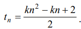

Методи 1 – 5 передбачають роботу з одновимірними масивами,
методи 6 – 7 передбачають опрацювання матриць,
метод 8 – розв’язання нелінійного рівняння,
метод 9 – робота з рядком символів типу string.
Створити консольний застосунок мовою C#. Вхідні дані вводити з клавіатури. Результати виводити на консоль. Використати методи класів Console, Convert в процесі введення та виведення даних. Реалізувати перераховані завдання у вигляді методів класу Program. Виклик методів здійснити за допомогою меню, застосувавши оператор вибору switch. Для створення масиву і матриці використати методи класу Random. Для виконання математичних обчислень використати методи класу Math. Усі завдання варіанта реалізувати в одному консольному проєкті Lab2.
| Номер варіанта | Умова задачі |
1. |
1.Згенерувати елементи одновимірного масиву, задавши їх кількість з консолі. Відсортувати згенерований масив за спаданням значень його елементів алгоритмом швидкого сортування. Вивести на консоль масив до та після сортування 2.У згенерованому масиві визначити прості числа із заданого з консолі діапазону, використавши алгоритм Ератосфена, та вивести їх на консоль. 3.Визначити кількість повторень кожного елементу згенерованого в п.1 масиву, застосувавши метод лінійного пошуку 4.Вивести на консоль значення мінімального та максимального елементів згенерованого в п.1 масиву та їх індекси, застосувавши метод лінійного пошуку. 5.Вивести на консоль значення елемента, заданого з консолі, застосувавши метод бінарного пошуку. У разі його відсутності в масиві вивести відповідне повідомлення. Модифікувати функцію бінарного пошуку у масиві, використавши метод BinarySearch() класу Array. 6.Згенерувати елементи матриці, задавши її вимірність з консолі. Вивести матрицю на консоль у вигляді таблиці. Визначити суму елементів заданого з консолі номеру рядка матриці та суму елементів заданого з консолі номеру стовпчика матриці. Вивести на консоль номери рядка та стовпчика матриці та обчислені суми. 7.Вивести на консоль значення мінімального та максимального елементів матриці та їх індекси, застосувавши методи класу Math. 8.Знайти корені нелінійного рівняння 6x4−3x3+8x2−25=0, застосувавши метод половинного ділення (метод бісекції). Вивести результати на консоль. Здійснити перевірку правильності рішення, підставивши знайдені значення коренів в нелінійне рівняння. 9.Увести з консолі рядок символів (тип string). Виконати операції редагування рядка, здійснивши пошук, заміну підрядка в рядку на заданий з консолі підрядок, вставку заданого з консолі підрядка та видалення заданого підрядка. Вивести на консоль рядок після редагування. |
2. |
1.Згенерувати елементи одновимірного масиву, задавши їх кількість з консолі. Відсортувати згенерований масив за зростанням значень його елементів алгоритмом бульбашкового сортування. Вивести масив до та після сортування на консоль. 2.Побудувати новий одновимірний масив простих чисел, використавши алгоритм Ератосфена, та вивести їх на консоль. 3.Об’єднати згенерований в п.1 масив з масивом простих чисел, визначених в п.2 завдання. Обчислити суму елементів масиву, їх середнє арифметичне, min і max елементів масиву, використавши методи класу Math. Результати вивести на консоль 4.Вивести на консоль індекси усіх повторень заданого з консолі елемента в масиві, побудованого в п.3 завдання, застосувавши метод лінійного пошуку 5.Вивести на консоль індекс елемента масиву, значення якого задане з консолі, застосувавши метод бінарного пошуку. У разі його відсутності в масиві ви вести відповідне повідомлення. Модифікувати функцію двійкового пошуку у масиві, використавши метод BinarySearch() класу Array 6.Згенерувати матрицю, i–й рядок якої визначає номер співробітника, j-й стовпчик якої визначає номер місяця року. Кількість співробітників задати з консолі. Значення на перетині i-го рядка та j-го стовпця визначає зарплату i-го співробітника у j-му місяці. Вивести матрицю на консоль у вигляді таблиці. Визначити загальний бюджет зарплати за рік, загальну і середню зарплату за місяць, номер якого ввести з консолі. 7.У згенерованій матриці поміняти місцями рядки, що містять максимальний та мінімальний елементи. Якщо шукані елементи знаходяться в одному рядку, то поміняти місцями стовпчики. Вивести на консоль матрицю до та після переміни місцями рядків чи стовпчиків.
8.Знайти корені нелінійного рівняння 9.Увести з консолі рядок символів (тип string). Виконати операції редагування рядка, здійснивши заміну усіх алфавітних символів на їх ASCII коди та видаливши усі цифрові символи. Вивести рядок після заміни на консоль. |
3. |
1.Згенерувати елементи одновимірного масиву, задавши їх кількість та діапазон значень з консолі. Відсортувати згенерований масив за зростанням значень його елементів алгоритмом сортування вибором. Вивести на консоль масив до та після сортування. 2.Вивести значення індексів елементів згенерованого масиву, що не змінилися після його сортування, та їх кількість. 3.Створити новий масив натуральних чисел, значеннями якого є прості числа в діапазоні від 1 до N. Значення N задати з консолі. Використати алгоритм Ератосфена для визначення простих чисел. Вивести прості числа на консоль. Якщо в згенерованому раніше масиві відсутні знайдені за алгоритмом Ератосфена прості числа, то вставити їх в згенерований масив, не змінивши його упорядкованість за зростанням. Вивести отриманий масив на консоль. 4.У сформованому в п.3 масиві визначити кількість парних елементів і елементів з парними індексами, застосувавши алгоритм лінійного пошуку. 5.Визначити кількість і значення елементів масиву, що кратні заданому з консолі числу, застосувавши метод бінарного пошуку. У разі їх відсутності вивести відповідне повідомлення. Модифікувати функцію двійкового пошуку у масиві, використавши метод BinarySearch() класу Array. 6.Згенерувати елементи матриці, задавши її вимірність та діапазон значень з консолі. На перетині i-го рядка та j-го стовпчика матриці записаний прибуток за j-й місяць від i-го проекту, який виконується в компанії. Вивести матрицю на консоль у вигляді таблиці. Визначити загальний прибуток від кожного проекту, загальний дохід компанії від усіх проектів за усі місяці, індекс проекту з найбільшим прибутком. Вивести результати на консоль. 7.У створеній матриці визначити індекси та значення її сідлових точок. Елемент матриці називається сідловою точкою, якщо він є найменшим у своєму рядку та найбільшим у своєму стовпчику. Вивести на консоль значення та індекси її сідлових точок або повідомлення про відсутність таких елементів. 8.Знайти корені нелінійного рівняння (x^2+x+1)*(x^2+x+1)−12=0, застосувавши метод половинного ділення (метод бісекції). Вивести результати на консоль. Здійснити перевірку правильності рішення, підставивши знайдені значення коренів в нелінійне рівняння 9.Увести з консолі рядок символів (тип string). Порахувати кількість слів, що починаються з великої літери. Вивести текст, складений з останніх букв усіх слів. Результати вивести на консоль. |
4. |
1.Згенерувати додатні та від’ємні значення елементів одновимірного масиву, задавши їх кількість та діапазон значень з консолі. Відсортувати згенерований масив за зростанням значень його елементів алгоритмом сортування включенням. Вивести на консоль масив до та після сортування. 2.Визначити прості числа серед додатних елементів згенерованого в п.1 масиву, використавши алгоритм Ератосфена. Вивести прості числа на консоль. Якщо в згенерованому масиві відсутні прості числа, то вивести на консоль відповідне повідомлення. 3.Переставити елементи згенерованого в п.1. масиву так, щоб спочатку були розташовані всі від’ємні елементи, потім усі додатні елементи, потім усі нульові. Порядок серед додатних і від’ємних елементів має зберегтися. Надрукувати масив після переставлення елементів. 4.Знайти найбільший серед від’ємних та найменший серед додатних елементів згенерованого в п.1 масиву, застосувавши алгоритм лінійного пошуку. Вивести значення знайдених елементів та їх індекси. 5.Визначити кількість і значення елементів масиву, що кратні заданому з консолі числу, застосувавши метод бінарного пошуку. У разі їх відсутності вивести відповідне повідомлення. Модифікувати функцію бінарного пошуку у масиві, використавши метод BinarySearch() класу Array 6.Згенерувати елементи матриці, задавши її вимірність та діапазон значень з консолі. На перетині i-го рядка та j-го стовпчика матриці записаний прибуток за j-й місяць від продажу i-го товару в магазині. Вивести матрицю на консоль у вигляді таблиці. Визначити загальний прибуток від продажу кожного товару, загальний прибуток магазину від продажу усіх товарів за усі місяці, індекс товару, який приносить прибуток. Вивести результати на консоль 7.Вивести на консоль значення мінімального та максимального елементів матриці та їх індекси, застосувавши методи класу Math. 8.Знайти корені нелінійного рівняння (x^2−5*x+7)^2−(x−2)*(x−3)=0, застосувавши метод половинного ділення (метод бісекції). Вивести результати на консоль. Здійснити перевірку правильності рішення, підставивши знайдені значення коренів в нелінійне рівняння. 9.Увести з консолі рядок символів (тип string), що містить круглі, квадратні та фігурні дужки. Визначити чи є послідовність дужок правильною, тобто кількість дужок, що відкривається, дорівнює кількості дужок, що закриваються. Результати вивести на консоль. |
5. |
1.Згенерувати цілочислові додатні та від’ємні елементи одновимірного масиву, задавши їх кількість та діапазон значень з консолі. Відсортувати згенерований масив за зростанням значень його елементів алгоритмом сортування Шелла. Вивести на консоль масив до та після сортування. 2.У згенерованому в п.1. масиві визначити прості числа із заданого з консолі діапазону додатних цілих значень, використавши алгоритм Ератосфена, та вивести їх на консоль. Якщо в згенерованому масиві відсутні прості числа, то вивести на консоль відповідне повідомлення 3.Переставити елементи згенерованого в п.1. масиву так, щоб їх значення чергувалися в порядку: від’ємний, додатний, нульовий, від’ємний, додатний, нульовий і т.д, Надрукувати масив після переставлення елементів. 4.Знайти найбільший серед від’ємних та найменший серед додатних елементів згенерованого в п.1. масиву, застосувавши алгоритм лінійного пошуку. Вивести значення знайдених елементів та їх індекси. 5.Визначити кількість і значення елементів масиву, що належать заданому з консолі діапазону, застосувавши метод бінарного пошуку. У разі їх відсутності вивести відповідне повідомлення. Модифікувати функцію бінарного пошуку у масиві, використавши метод BinarySearch() класу Array. 6.Згенерувати елементи матриці, задавши її вимірність та діапазон значень з консолі. На перетині i-го рядка та j-го стовпчика матриці записаний рейтинг i-го університету за j-й навчальний рік. Вивести матрицю на консоль у вигляді таблиці. Визначити університет, який мав найвищий рейтинг за усі роки; рік, в якому сумарний рейтинг усіх університетів був найвищим, університет, сумарний рейтинг якого за усі роки був найнижчим. Вивести результати на консоль 7.У створеній матриці визначити та вивести на консоль значення та індекси мінімального елемента. Видалити рядок та стовпчик з мінімальним елементом матриці. Вивести на консоль отриману після перетворення матрицю 8.Знайти корені нелінійного рівняння 5*x^4+4*x^3-6*x^2+5=0, застосувавши метод половинного ділення (метод бісекції). Вивести результати на консоль. Здійснити перевірку правильності рішення, підставивши знайдені значення коренів в нелінійне рівняння. 9.Увести з консолі рядок символів (тип string), що містить круглі дужки. Визначити та вивести символи, що містяться в середині круглих дужок. Дужки можуть бути вкладені. Результати вивести на консоль |
6. |
1.Згенерувати натуральні значення елементів одновимірного масиву, задавши їх кількість та діапазон значень з консолі. Відсортувати згенерований масив за зростанням значень його елементів алгоритмом бульбашкового сортування. Вивести на консоль масив до та після сортування. 2.Перевірити, чи елементи згенерованого в п.1. масиву, які мають непарні індекси, є простими числами. Для визначення простих чисел використати алгоритм Ератосфена, Якщо такі числа знайдені, вивести їх на консоль, інакше вивести відповідне повідомлення. 3.Переставити елементи згенерованого в п.1. масиву так, щоб парні і непарні елементи чергувалися. Перед кожним простим числом вставити нульове значення. Вивести на консоль масив після переставлення елементів.
4.Знайти у відсортованому масиві елементи, значення яких є трикутними
числами, що визначаються за формулою 5.Визначити кількість і значення елементів масиву, що належать заданому з консолі діапазону, застосувавши метод бінарного пошуку. У разі їх відсутності вивести відповідне повідомлення. Модифікувати функцію бінарного пошуку у масиві, використавши метод BinarySearch() класу Array 6.Згенерувати елементи матриці, задавши її вимірність та діапазон значень елементів з консолі, включаючи нульове значення. На перетині i-го рядка та j-го стовпчика матриці записана кількість вакцинованих людей проти Covid-19 в i-й країні в j-му місяці. Якщо значення дорівнює нулю, це означає, що в i-й країні в j-му місяці людей не вакцинували. Вивести матрицю на консоль у вигляді таблиці. Визначити загальну кількість людей, що вакциновані в усіх країнах за весь період, країну, в якій найменша кількість вакцинованих за весь період, місяць з найбільшою кількістю вакцинованих. Результати вивести на консоль. 7.Із згенерованої матриці видалити країні, які за весь період не вакцинували жодної людини, переставити стовпці матриці відповідно до зростання сум їх елементів. Перетворену матрицю вивести на консоль. 8.Знайти корені нелінійного рівняння 2*x^4−x^3−9*x^2+13*x−5=0, застосувавши метод бісекції. Результати вивести на консоль. Здійснити перевірку правильності рішення, підставивши знайдені значення коренів в нелінійне рівняння 9.Увести рядок алфавітних та цифрових символів. Видалити з рядка символи, що стоять на парних позиціях. Подвоїти усі алфавітні символи, що введені у верхньому регістрі. Цифрові символи замінити на номер студентської групи. |
7. |
1.Згенерувати натуральні значення елементів одновимірного масиву, задавши їх кількість та діапазон значень з консолі. Відсортувати згенерований масив за зростанням значень його елементів алгоритмом сортування вставками. Вивести на консоль масив до та після сортування 2.Перевірити, чи елементи згенерованого в п.1 масиву з парними індексами є простими числами. Для визначення простих чисел використати алгоритм Ератосфена, Якщо такі числа знайдені, вивести їх на консоль, інакше вивести відповідне повідомлення. 3.Переставити елементи згенерованого в п.1 масиву так, щоб спочатку розташовувалися прості числа, потім складені, кратні 3, потім складені кратні 2 і 3, потім усі інші. Вивести на консоль масив після переставлення елементів. 4.Знайти елементи згенерованого в п.1 масиву, що є квадратами цілих чисел, застосувавши алгоритм лінійного пошук. Вивести знайдені значення та їх індекси на консоль. 5.Визначити кількість і значення елементів масиву, що належать заданому з консолі діапазону, застосувавши метод бінарного пошуку. У разі їх відсутності вивести відповідне повідомлення. Модифікувати функцію бінарного пошуку у масиві, використавши метод BinarySearch() класу Array 6.Згенерувати елементи матриці, задавши її вимірність та діапазон значень елементів з консолі. На перетині i-го рядка та j-го стовпчика матриці записана кількість студентів, що проходять практику в j-му місяці в i-й компанії. Вивести матрицю на консоль. Визначити загальну кількість студентів, що проходили практику в усіх компаніях в заданому з консолі місяці, кількість компаній, в яких проходили практику задана з консолі кількість студентів, компанію, в якій практикувалась найбільша кількість студентів. Результати вивести на консоль. 7.Відсортувати кожний рядок згенерованої матриці за зростанням значень її елементів, визначити суму елементів рядків та переставити їх відповідно до спадання сум елементів по рядках. Вивести перетворену матрицю на консоль
8.Знайти корені нелінійного рівняння 9.Увести з клавіатури рядок алфавітних, цифрових і символів знаків арифметичних дій. З рядка видалити всі алфавітні символи. Перевести цифрові символи у числові типи та вивести числа на екран. Над отриманими числами виконати арифметичні дії відповідно до заданих в рядку операцій. |
8. |
1.Згенерувати елементи одновимірного масиву, задавши їх кількість та діапазон значень з консолі. Відсортувати згенерований масив за зростанням значень його елементів алгоритмом сортування вибором. Вивести на консоль масив до та після сортування 2.Перевірити, чи непарні елементи згенерованого в п.1 масиву є простими числами. Для визначення простих чисел використати алгоритм Ератосфена, Якщо такі числа знайдені, вивести їх на консоль, інакше вивести відповідне повідомлення. 3.Переставити елементи згенерованого в п.1 масиву так, щоб спочатку розташовувалися прості числа, потім складені, які діляться на 2, але не діляться на 3, потім числа, що діляться на 2 та на 3, потім числа, що діляться тільки на 3, потім усі інші. Вивести на консоль масив після перестановки елементів 4.Знайти в масиві та вивести на консоль елементи та їх індекси, які є п’ятикутними числами, застосувавши алгоритм лінійного пошуку. Формула для обчислення n-го п’ятикутного числа tn = (n × (3× n −1))/ 2 (1, 5, 12, 22,…). У разі відсутності п’ятикутних чисел вивести відповідне повідомлення. 5.Визначити усі входження в масив заданого з консолі елемента, застосувавши метод бінарного пошуку. У разі їх відсутності вивести відповідне повідомлення. Вивести на консоль індекси шуканого елемента. Модифікувати функцію бінарного пошуку у масиві, використавши метод BinarySearch() класу Array 6.Згенерувати елементи матриці, задавши її вимірність з консолі. Матриця означує дисципліни та компетентності, які вони формують, і містить значення 0 або 1. На перетині i-го рядка та j-го стовпчика матриці записаний 0, якщо дисципліна не забезпечує формування компетентності студента, 1 – якщо між дисципліною і компетентністю є зв’язок. Визначити, кількість дисциплін, які не забезпечують формування жодної компетентності студентів, дисципліни, які формують найбільшу кількість компетентностей, компетентності, які не забезпечені дисциплінами. Результати вивести на консоль 7.В згенерованій матриці визначити суми елементів в стовпчиках, записати їх в одновимірний масив, відсортувати його, переставити стовчики матриці відповідно до зростання їх сум. 8.Знайти корені нелінійного рівняння x^3-6*x+4*x^2-3=0, застосувавши метод бісекції. Результати вивести на консоль. Здійснити перевірку правильності рішення, підставивши знайдені значення коренів в нелінійне рівняння 9.Увести з клавіатури рядок символів, включаючи розділові символи (пробіли, коми та крапки) та круглі дужки. Знайти слова, які мають парну довжину, та підрахувати їх кількість. Видалити символи, що розміщені в круглих дужках. |
9. |
1.Згенерувати елементи одновимірного масиву, задавши їх кількість та діапазон значень з консолі. Відсортувати згенерований масив за зростанням значень його елементів алгоритмом сортування Шелла. Вивести на консоль масив до та після сортування 2.Знайти в згенерованому в п.1 масиві прості числа, застосувавши рещето Сундарама. Якщо такі числа знайдені, вивести їх на консоль, інакше вивести відповідне повідомлення. Посилання на алгоритм решета Сундарама 3.Переставити елементи в згенерованому в п.1 масиву так, щоб на парних позиціях розмістилися елементи з лівої частини відсортованого масиву з індексами від 0 до серединного елемента−1, на непарних позиціях розмістилися елементи з правої частини відсортованого масиву з індексами від кінцевого елемента до серединного. Вивести на консоль масив після перестановки елементів. 4.Знайти в згенерованому в п.1 масиві та вивести на консоль елементи та їх індекси, які є пірамідальними числами, застосувавши алгоритм лінійного пошуку. Формула для обчислення n-го пірамідального числа (1, 4, 10, 35,…): tn = (n×(n +1)×(n + 2))/ 6 . 5.Визначити усі входження в масив заданого з консолі елемента, застосувавши метод бінарного пошуку. У разі їх відсутності вивести відповідне повідомлення. Вивести на консоль індекси шуканого елемента. Модифікувати функцію бінарного пошуку у масиві, використавши метод BinarySearch() класу Array 6.Згенерувати елементи матриці, задавши її вимірність та діапазон значень елементів з консолі. На перетині i-го рядка та j-го стовпчика матриці записана кількість кредитів, що має i-та дисципліна в j-му навчальному році. Якщо значення елемента матриці дорівнює нулю, це означає, що i-та дисципліна не вивчається в j-му навчальному році Вивести матрицю на консоль у вигляді таблиці. Визначити загальну кількість кредитів по всіх дисциплінах за усі навчальні роки, дисципліну та навчальний рік, в якому є дисципліна з найбільшою кількістю кредитів, середню кількість кредитів в кожному навчальному році. Результати вивести на консоль. 7.В згенерованій матриці знайти рядок або стовпчик з найбільшою кількістю нульових елементів, видалити відповідний рядок або стовпчик. Вивести на консоль перетворену матрицю. 8.Знайти корені нелінійного рівняння (x−1)^3+(2x+3)^3=27x^3+8, застосувавши метод половинного ділення (метод бісекції). Вивести результати на консоль. Здійснити перевірку правильності рішення, підставивши знайдені значення коренів в нелінійне рівняння. 9.Увести з консолі рядок символів, включаючи розділові (пробіли, коми та крапки). Визначити в рядку та вивести на консоль слова і підрахувати їх кількість. Слова – це лексеми, як не містять всередині розділових символів. Кожне друге слово розбити на склади. |
10. |
1.Згенерувати елементи одновимірного масиву, задавши їх кількість та діапазон значень з консолі. Відсортувати згенерований масив за зростанням значень його елементів алгоритмом швидкого сортування. Вивести на консоль масив до та після сортування. 2.Згенерувати другий масив простих чисел від 1 до n, задавши значення n з консолі. Для отримання простих чисел використати решето Сундарама. Об’єднати масив простих чисел із згенерованим в п.1 масивом, не порушуючи його впорядкованість за зростанням. Надрукувати прості числа та об’єднаний масив. Посилання на алгоритм 3.Переставити елементи відсортованого масиву так, щоб елементи з парними та непарними індексами помінялися місцями. Вивести на консоль масив після перестановки елементів. 4.Знайти в згенерованому в п.1 масиві та вивести на консоль елементи та їх індекси, які є шестикутними числами, застосувавши алгоритм лінійного пошуку. Шестикутні числа складають послідовність (1, 6, 15, 28,…). Формула для обчислення n-го шестикутного числа: tn=2 × n2 − n. У разі їх відсутності вивести відповідне повідомлення. 5.Знайти в масиві та вивести на консоль елементи та їх індекси, які є шестикутними числами, застосувавши алгоритм бінарного пошуку. Шестикутні числа складають послідовність (1, 6, 15, 28,…). Формула для обчислення n-го шестикутного числа: tn =2 × n2 − n. Модифікувати функцію бінарного пошуку у масиві, використавши метод BinarySearch()() класу Array 6.Згенерувати елементи матриці, задавши її вимірність та діапазон значень елементів з консолі. На перетині i-го рядка та j-го стовпчика матриці записана кількість студентів, які працюють в i-ій компанії в j-му навчальному році. Якщо значення елемента матриці нулю, це означає, що в i-ій компанії не працює жодного студента в j-му навчальному році Вивести матрицю на консоль у вигляді таблиці. Визначити компанію і рік, коли працюючих студентів найбільше, середню кількість працюючих студентів за усі роки в кожній компанії та компанії, в яких не працює жодного студента. 7.Із згенерованої матриці видалити компанії, в яких не працює жодного студента, відсортувати рядки матриці за зростанням, здійснити пошук в матриці введеного з консолі значення. Результати вивести на консоль. 8.Знайти корені нелінійного рівняння x4−13x2+36=0, застосувавши метод половинного ділення (метод бісекції). Вивести результати на консоль. Здійснити перевірку правильності рішення, підставивши знайдені значення коренів в нелінійне рівняння. 9.Увести рядок символів, включаючи розділові (пробіли, коми, крапки). Слова є послідовністю символів без пробілів. Розбити рядок на слова, визначити їх кількість, знайти слово, що має найбільшу кількість голосних |
11. |
1.Згенерувати елементи одновимірного масиву, задавши їх кількість та діапазон значень з консолі. Відсортувати згенерований масив за зростанням значень його елементів алгоритмом бульбашкового сортування. Вивести на консоль масив до та після сортування. 2.Знайти в згенерованому в п.1 масиві прості числа, застосувавши рещето Ератосфена. Якщо такі числа знайдені, вивести їх на консоль, інакше вивести відповідне повідомлення. 3.В згенерованому в п.1 масиві знайти мінімальний та максимальні елементи. Поміняти їх місцями. Вивести на консоль масив після перестановки. 4.Знайти в згенерованому в п.1 масиві та вивести на консоль елементи та їх індекси, які є семикутними числами, застосувавши алгоритм лінійного пошуку. Семикутні числа складають послідовність (1, 7, 18, 34,…). Формула для обчислення n-го семикутного числа: tn = (1/2)*(5n2-3n) 5.Визначити усі входження в масив заданого з консолі елемента, застосувавши метод бінарного пошуку. У разі їх відсутності вивести відповідне повідомлення. Вивести на консоль індекси шуканого елемента. Модифікувати функцію бінарного пошуку у масиві, використавши метод BinarySearch() класу Array 6.Згенерувати елементи матриці, задавши її вимірність та діапазон значень елементів з консолі. На перетині i-го рядка та j-го стовпчика матриці записана кількість студентів, які вибрані до складу студради i-го факультету в j-му навчальному році. Вивести матрицю на консоль у вигляді таблиці. Визначити факультет і навчальний рік, в якому кількість студентів в студраді є найбільшою, сумарну кількість студентів в студраді за усі роки навчання на заданому з консолі факультеті, навчальний рік, в якому сумарна кількість студентів в студрадах усіх факультетів найменша. Результати вивести на консоль. 7.Із згенерованої матриці видалити факультети, на яких в заданому з консолі навчальному році студрада мала найменшу кількість, відсортувати рядки матриці за зростанням, здійснити пошук в матриці введеного з консолі значення. Результати вивести на консоль. 8.Знайти корені нелінійного рівняння 3x − cos x −1= 0 , застосувавши метод половинного ділення (метод бісекції). Вивести результати на консоль. Здійснити перевірку правильності рішення, підставивши знайдені значення коренів в нелінійне рівняння. 9.Увести з клавіатури рядок символів, який містить слова та розділові символи. Видалити з рядка однолітерні слова та зайві пропуски, коми, крапки. Вивести перетворений рядок на консоль. |
12. |
1.Згенерувати елементи одновимірного масиву, задавши їх кількість та діапазон значень з консолі. Відсортувати згенерований масив за зростанням значень його елементів алгоритмом сортування включенням. Вивести на консоль масив до та після сортування. 2.Знайти в згенерованому в п.1 масиві прості числа, застосувавши рещето Сундарама. Якщо такі числа знайдені, вивести їх на консоль, інакше вивести відповідне повідомлення. Посилання на алгоритм решета Сундарама: 3.В згенерованому в п.1 масиві знайти мінімальний та максимальні елементи. Елементи, що розташовані між мінімальним та максимальним записати в інвертованому порядку. Вивести результати на консоль. 4.Знайти в згенерованому в п.1 масиві та вивести на консоль елементи та їх індекси, які є восьмикутними числами, застосувавши алгоритм лінійного пошуку. Восьмикутні числа складають послідовність (1, 8, 21, 40,…). Формула для обчислення n-го восьмикутного числа: tn = 3n2-2n 5.Визначити усі входження в масив восьмикутних чисел, застосувавши метод бінарного пошуку. У разі їх відсутності вивести відповідне повідомлення. Вивести на консоль індекси шуканого елемента. Модифікувати функцію бінарного пошуку у масиві, використавши метод BinarySearch() класу Array 6.Згенерувати елементи матриці, задавши її вимірність та діапазон значень елементів з консолі. На перетині i-го рядка та j-го стовпчика матриці записана кількість заяв абітурієнтів, які подали їх до вступу на i-й факультет та j-ту спеціальність. Вивести матрицю на консоль у вигляді таблиці. Визначити факультет і спеціальність, на яку подана найбільші кількість заяв абітурієнтів, сумарну кількість заяв на усі спеціальності заданого з консолі факультету, сумарну кількість заяв на задану з консолі спеціальність на всіх факультетах. Результати вивести на консоль. 7.Із згенерованої матриці видалити факультети, на яких сумарна кількість заяв на всі спеціальності найменша. Переставити стовпці матриці в порядку спадання сумарної кількості заяв на спеціальність. Здійснити пошук в матриці введеного з консолі значення. Результати вивести на консоль.
8.Знайти корені нелінійного рівняння
9.Увести рядок символів, який складається із круглих дужок і знаків
запитання. Передбачити вкладеність дужок, наприклад,
|
13. |
1.Згенерувати елементи одновимірного масиву, задавши їх кількість та діапазон значень з консолі. Відсортувати згенерований масив за зростанням значень його елементів алгоритмом сортування вибором. Вивести на консоль масив до та після сортування. 2.Знайти прості числа в заданому з консолі діапазоні, використавши решето Ератосфена. Записати прості числа в одновимірний масив. Об’єднати масив простих чисел із згенерованим раніше, виключивши повторення елементів і зберігаючи їх упорядкованість. Вивести масив на консоль. 3.У згенерованому в п.1 масиві поміняти місцями ліву та праву частини. В якості розділового елемента вибрати серединний елемент. Вивести результати на консоль 4.Знайти в згенерованому в п.1 масиві та вивести на консоль елементи та їх індекси, які є десятикутними числами, застосувавши алгоритм лінійного пошуку. десятикутні числа складають послідовність (1, 10, 27, 52,…). Формула для обчислення n-го десятикутного числа: tn = 4n2 - 3n 5.Визначити усі входження в згенерований в п.1 масив десятикутних чисел, застосувавши метод бінарного пошуку. У разі їх відсутності вивести відповідне повідомлення. Вивести на консоль індекси шуканого елемента. Модифікувати функцію бінарного пошуку у масиві, використавши метод BinarySearch() класу Array 6.Згенерувати елементи матриці, задавши її вимірність та діапазон значень елементів з консолі. На перетині i-го рядка та j-го стовпчика матриці записана кількість опадів, що випали в i-му місяці j-то року. Вивести матрицю на консоль. Визначити рік та місяць, в якому випала найбільша кількість опадів, сумарну кількість опадів, що випали у зимовий період за усі роки, кількість опадів, що випала в заданий з консолі рік. Результати вивести на консоль 7.Із згенерованої матриці видалити роки із найменшою кількістю опадів за усі місяці. Переставити рядки матриці в порядку спадання сумарної кількості опадів за усі роки. Здійснити пошук в матриці введеного з консолі значення. Результати вивести на консоль. 8.Знайти корені нелінійного рівняння ex + Inx - 10x = 0, застосувавши метод бісекції. Вивести результати на консоль. Здійснити перевірку правильності рішення, підставивши знайдені значення коренів в нелінійне рівняння. 9.Увести з консолі рядок символів, який складається зі слів та пропусків між ними. Визначити кількість повторів кожного слова та саме слово, що зустрічається найчастіше в тексті. Результати вивести на консоль |
14. |
1.Згенерувати елементи одновимірного масиву, задавши їх кількість та діапазон значень з консолі. Відсортувати згенерований масив за зростанням значень його елементів алгоритмом сортування Шелла. Вивести на консоль масив до та після сортування. 2.Знайти прості числа, задавши верхню границю чисел і використавши решета Сундарама.Посилання на опис алгоритму Записати знайдені прості числа у одновимірний масив та вивести його на консоль 3.У згенерованому в п.1 масиві поміняти місцями перший і останній, максимальний і мінімальний елементи місцями. Результати вивести на консоль. 4.Знайти в згенерованому в п.1 масиві та вивести на консоль елементи та їх індекси, які є центрованими k-кутними числами, застосувавши алгоритм лінійного пошуку. Формула для обчислення n-го центрованого k-кутного числа:  Значення k увести з консолі. 5.Визначити усі входження в масив центрованих k-кутних чисел, застосувавши метод бінарного пошуку. У разі їх відсутності вивести відповідне повідомлення. Вивести на консоль індекси шуканого елемента. Модифікувати функцію бінарного пошуку у масиві, використавши метод BinarySearch() класу Array. 6.Згенерувати елементи матриці, задавши її вимірність та діапазон значень елементів з консолі. На перетині i-го рядка та j-го стовпчика матриці записана оцінка i-го студента по j-й дисципліні. Вивести матрицю на консоль у вигляді таблиці. Визначити студентів, які за підсумками успішності за всіма дисциплінами підпадають під відрахування, рейтинг кожного студента як середнє арифметичне по всіх дисциплінах, дисципліну, середній бал якої найбільший. Результати вивести на консоль. 7.Із згенерованої матриці видалити дисципліну, середній бал якої найменший по всіх студентах. Переставити стовпці матриці в порядку спадання середнього балу за дисциплінами. Здійснити пошук в матриці введеного з консолі значення. Результати вивести на консоль 8.Знайти корені нелінійного рівняння x^3−4*x^2+6=0, застосувавши метод половинного ділення (метод бісекції). Вивести результати на консоль. Здійснити перевірку правильності рішення, підставивши знайдені значення коренів в нелінійне рівняння. 9.Увести з консолі рядок символів, який складається зі слів та пропусків між ними. Створити новий рядок, в якому слова відсортовані за спаданням довжини слів. Відсортувати рядок за алфавітом першої літери слів. Результати вивести на консоль. |
15. |
1.Згенерувати елементи одновимірного масиву, задавши їх кількість та діапазон значень з консолі. Відсортувати згенерований масив за зростанням значень його елементів алгоритмом швидкого сортування. Вивести на консоль масив до та після сортування. 2.У згенерованому в п.1 масиві визначити прості числа, застосувавши решето Ератосфена, і надрукувати їх. Якщо прості числа не знайдені, вивести відповідне повідомлення. 3.У згенерованому в п.1 масиві переставити елементи так, щоб в середині масиву знаходився мінімальний елемент, ліва частина, рахуючи від середини масиву, упорядкована за спаданням, права частина упорядкована за зростанням. Результати перетворення масиву вивести на консоль. 4.Знайти в згенерованому в п.1 масиві та вивести на консоль елементи та їх індекси, які є центрованими квадратними числами, застосувавши алгоритм лінійного пошуку. Формула для обчислення n-го центрованого квадратного числа: tn = (n - 1)2 + n2. 5.Визначити усі входження в масив центрованих квадратних чисел, застосувавши метод бінарного пошуку. У разі їх відсутності вивести відповідне повідомлення. Вивести на консоль індекси шуканого елемента. Модифікувати функцію бінарного пошуку у масиві, використавши метод BinarySearch() класу Array. 6.Згенерувати елементи матриці, задавши її вимірність та діапазон значень елементів з консолі. На перетині i-го рядка та j-го стовпчика матриці записана кількість підручників, які i-й студент прочитав по j-й дисципліні. Вивести матрицю на консоль у вигляді таблиці. Визначити студентів, які прочитали найбільшу кількість підручників за всіма дисциплінами, дисципліну, по якій рекомендована найменша кількість підручників, сумарну кількість підручників, які прочитали усі студенти по всіх дисциплінах. Результати вивести на консоль. 7.Із згенерованої матриці видалити студента, який прочитав найменшу кількість підручників за всіма дисциплінами. Переставити стовпці матриці в порядку спадання сумарної кількості підручників, які прочитали всі по кожній дисципліні. Результати вивести на консоль. 8.Знайти корені нелінійного рівняння x4 + 1 = 2 * (1 + x)4, застосувавши метод половинного ділення (метод бісекції). Вивести результати на консоль. Здійснити перевірку правильності рішення, підставивши знайдені значення коренів в нелінійне рівняння. 9.Увести з консолі рядок символів. Підрахувати кількість повторів кожного символу, видалити символи, що повторюються. Результати вивести на консоль. |
16. |
1.Згенерувати елементи одновимірного масиву, задавши їх кількість та діапазон значень з консолі. Відсортувати згенерований масив за зростанням значень його елементів алгоритмом бульбашкового сортування. Вивести на консоль масив до та після сортування. 2.У згенерованому в п.1 масиві визначити прості числа, застосувавши решето Сундарама. Посилання на опис алгоритму. Вивести прості числа на консоль. Якщо прості числа не знайдені, вивести відповідне повідомлення 3.У згенерованому в п.1 масиві визначити максимальний елемент серед елементів з парними індексами, і мінімальний елемент серед елементів з непарними індексами. Вивести знайдені елементи та їх індекси на консоль. Поміняти місцями знайдені елементи. Використати методи класу Math. Результати перетворення масиву вивести на консоль. 4.Знайти у згенерованому в п.1 масиві та вивести на консоль елементи та їх індекси, які є числами Фібоначчі, що визначаються за формулою F1 = 1; F2 = 1; Fk = Fk-2 + Fk-2 для k>2. 5.Визначити усі входження у створений масив центрованих трикутних чисел, застосувавши метод бінарного пошуку. Формула для обчислення nго центрованого трикутного числа: tn = (3n2 + 3n + 2)/2. У разі їх відсутності вивести відповідне повідомлення. Вивести на консоль індекси шуканих елементів. Модифікувати функцію бінарного пошуку у масиві, використавши метод BinarySearch() класу Array. 6.Згенерувати елементи матриці, задавши її вимірність та діапазон значень елементів (0…15) з консолі. На перетині i-го рядка та j-го стовпчика матриці записана кількість лабораторних робіт, виконаних i-м студент з j-ї дисципліни. Вивести матрицю на консоль у вигляді таблиці. Визначити студентів, які виконали найбільшу кількість лабораторних робіт за всіма дисциплінами, дисципліну, по якій усі студенти виконали найменшу кількість робіт, студентів, які хоча б з одної дисциплінами не виконали жодної (в матриці записаний 0) лабораторної роботи. Результати вивести на консоль. 7.Із згенерованої матриці видалити студентів (рядки), які хоча б з одної дисциплінами не виконали жодної (в матриці записаний 0) лабораторної роботи. Вивести перетворену матрицю на консоль. Якщо таких студентів немає, вивести відповідне повідомлення. 8.Знайти корені нелінійного рівняння 2x3 - 3x2 -12x + 8 = 0, застосувавши метод бісекції. Вивести результати на консоль. Здійснити перевірку правильності рішення, підставивши знайдені значення коренів в нелінійне рівняння. 9.Увести з консолі рядок символів. Видалити слова, які складаються з одної літери. Підрахувати кількість слів, перша і остання літера яких однакові. Якщо таких слів нема, вивести відповідне повідомлення. Результати вивести на консоль. |
17. |
1.Згенерувати елементи одновимірного масиву, задавши їх кількість та діапазон значень з консолі. Відсортувати згенерований масив за зростанням значень його елементів алгоритмом швидкого сортування. Вивести на консоль масив до та після сортування. 2.У згенерованому в п.1 масиві визначити прості числа, застосувавши решето Ератосфена, і надрукувати їх. Якщо прості числа не знайдені, вивести відповідне повідомлення. 3.У згенерованому в п.1 масиві знайти досконалі числа, вивести їх значення та індекси на консоль. Досконале число – це число, яке дорівнює сумі всіх своїх дільників, у тому числі одиницю, але виключаючи саме себе, наприклад число 6 – досконале, оскільки його дільники 1,2,3 в сумі складають 6. Застосувати метод лінійного пошуку. 4.Знайти в масиві та вивести на консоль елементи та їх індекси, які є числами Мерсенна, застосувавши алгоритм лінійного пошуку. Формула для обчислення n-го числа Мерсенна: tn = 2n - 1. 5.Визначити усі входження в масив заданого з консолі елемента, застосувавши метод бінарного пошуку. У разі їх відсутності вивести відповідне повідомлення. Вивести на консоль індекси шуканого елемента. Модифікувати функцію бінарного пошуку у масиві, використавши метод BinarySearch() класу Array 6.Згенерувати елементи матриці, задавши її вимірність та діапазон значень елементів з консолі. На перетині i-го рядка та j-го стовпчика матриці записана кількість пропущених занять i-м студент з j-ї дисципліни. Вивести матрицю на консоль у вигляді таблиці. Визначити студентів, які пропустили найбільшу кількість занять за всіма дисциплінами, дисципліну, по якій пропущена всіма студентами найменша кількість занять, середнє значення пропусків всіма студентами занять з усіх дисциплін. Результати вивести на консоль 7.Із згенерованої раніше матриці видалити студентів (рядки), які пропустили найбільшу кількість занять. Вивести перетворену матрицю на консоль. 8.Знайти корені нелінійного рівняння x3 + 2x - 4 = 0, застосувавши метод половинного ділення (метод бісекції). Вивести результати на консоль. Здійснити перевірку правильності рішення, підставивши знайдені значення коренів в нелінійне рівняння 9.Увести з консолі рядок символів, який містить алфавітні та розділові символи (пробіли, точки, коми). Визначити кількість слів в рядку. Знайти найдовше слово. Першу літеру слова, що записано після точки, перевести у верхній регістр. Результати вивести на консоль |
18. |
1.Згенерувати елементи одновимірного масиву, задавши їх кількість та діапазон значень з консолі. Відсортувати згенерований масив за зростанням значень його елементів алгоритмом сортування вибором. Вивести на консоль масив до та після сортування. 2.Визначити прості числа, задавши найбільшу межу чисел і застосувавши решето Ератосфена. Записати прості числа у масив і вивести його на консоль. Дописати в кінець відсортованого раніше масиву масив простих чисел. 3.Знайти в масиві та вивести на консоль елементи та їх індекси, які є числами Фібоначчі, Мерсенна(tn = 2n - 1) або Ферма(tn = 22n - 1) застосувавши алгоритм лінійного пошуку. Якщо вказаних чисел в масиві не знайдено, вивести відповідне повідомлення. 4.У створеному масиві переставити елементи так, щоб спочатку йшли числа Фібоначчі, потім числа Мерсенна, потім числа Ферма, потім решта. Результати перетворення масиву вивести на консоль. Застосувати метод лінійного пошуку. Якщо вказаних чисел в масиві не знайдено, визначити середнє арифметичне та середнє геометричне елементів масиву. 5.Визначити усі входження в масив заданого з консолі елемента, застосувавши метод бінарного пошуку. У разі їх відсутності вивести відповідне повідомлення. Вивести на консоль індекси шуканого елемента. Модифікувати функцію бінарного пошуку у масиві, використавши метод BinarySearch() класу Array. 6.Згенерувати елементи матриці, задавши її вимірність та діапазон значень елементів з консолі, включаючи нульове значення. На перетині i-го рядка та j-го стовпчика матриці записана кількість резюме, посланих i-им студентом для працевлаштування в j-ту компанію. Вивести матрицю на консоль. Визначити студентів, які послали резюме у всі компанії, компанію, в яку послали найменшу кількість резюме, студента, який не послав резюме в жодну компанію. Результати вивести на консоль. 7.Із згенерованої раніше матриці видалити студента, який не послав жодного резюме в компанію. Вивести перетворену матрицю на консоль. Якщо такого студента немає, вивести відповідне повідомлення. 8.Знайти корені нелінійного рівняння 3x + cosx + 1 = 0, застосувавши метод половинного ділення (метод бісекції). Вивести результати на консоль. Здійснити перевірку правильності рішення, підставивши знайдені значення коренів в нелінійне рівняння. 9.Увести з консолі рядок символів, який містить алфавітні та розділові символи (пробіли, точки, коми). Визначити кількість слів в рядку. Упорядкувати слова так, щоб вийшов "ланцюжок" слів, коли перша буква поточного слова збігається з останньою буквою попереднього слова, а остання буква поточного слова – з першою буквою наступного слова. Якщо ланцюжок створити неможливо, вивести відповідне повідомлення. |
19. |
1.Згенерувати елементи одновимірного масиву, задавши їх кількість та діапазон значень з консолі. Відсортувати згенерований масив за зростанням значень його елементів алгоритмом сортування Шелла. Вивести на консоль масив до та після сортування. 2.У згенерованому масиві визначити прості числа, застосувавши решето Ератосфена, і надрукувати їх. Якщо прості числа не знайдені, вивести відповідне повідомлення. 3.У створеному масиві переставити елементи так, щоб спочатку йшли парні елементи, якщо їх індекси у вхідному масиві парні, потім непарні елементи, якщо їх індекси у вхідному масиві непарні, потім елементи з нульовим значенням, потім решта. Результати перетворення масиву вивести на консоль 4.Знайти в масиві та вивести на консоль елементи та їх індекси, які є квадратами чисел, застосувавши алгоритм лінійного пошуку. 5.Визначити усі входження в масив заданого з консолі елемента, застосувавши метод бінарного пошуку. У разі їх відсутності вивести відповідне повідомлення. Вивести на консоль індекси шуканого елемента. Модифікувати функцію бінарного пошуку у масиві, використавши метод BinarySearch() класу Array 6.Згенерувати елементи матриці, задавши її вимірність та діапазон значень елементів з консолі. На перетині i-го рядка та j-го стовпчика матриці записана температура повітря в i-ий день j-го місяця. Вивести матрицю на консоль. Визначити місяці, середня температура в яких була вище за задану з консолі, день, в якому температура була найнижча по всіх місяцях, середню температура взимку. Результати вивести на консоль. 7.У згенеровану раніше матрицю додати рядок, який для кожного місяця буде містити середнє значення температури повітря за місяць. Вивести перетворену матрицю на консоль. 8.Знайти корені нелінійного рівняння x2+4sinx = 0, застосувавши метод половинного ділення (метод бісекції). Вивести результати на консоль. Здійснити перевірку правильності рішення, підставивши знайдені значення коренів в нелінійне рівняння 9.Увести з консолі рядок символів, який містить алфавітні та розділові символи (пробіли, точки, коми). Визначити кількість слів в рядку. Якщо слово починається з голосної, його першу літеру перевести у верхній регістр. Великі літери в середині слова перевести у нижній регістр. Результати вивести на консоль. |
20. |
1.Згенерувати елементи одновимірного масиву, задавши їх кількість та діапазон значень з консолі. Відсортувати згенерований масив за зростанням значень його елементів алгоритмом сортування включенням. Вивести на консоль масив до та після сортування. 2.У згенерованому масиві визначити прості числа, застосувавши решето Ератосфена, і надрукувати їх. Якщо прості числа не знайдені, вивести відповідне повідомлення. 3.У створеному масиві для кожної пари сусідніх елементів знайти найбільший спільний дільник і записати їх в новий одновимірний масив. Отриманий масив вивести на консоль.
4.Знайти в масиві та вивести на консоль елементи та їх індекси, які є
центрованими трикутними числами, застосувавши алгоритм лінійного
пошуку. Формула для обчислення n-го центрованого трикутного числа: 5.Визначити усі входження в масив заданого з консолі елемента, застосувавши метод бінарного пошуку. У разі їх відсутності вивести відповідне повідомлення. Вивести на консоль індекси шуканого елемента. Модифікувати функцію бінарного пошуку у масиві, використавши метод BinarySearch() класу Array 6.Згенерувати елементи матриці, задавши її вимірність та діапазон значень елементів з консолі, включаючи нульове значення. i-й рядок означує телеканал, j-й стовпчик означує телепрограму. На перетині i-го рядка та jго стовпчика матриці записана кількість телепрограм. Вивести матрицю на консоль. Визначити телеканал, який має найбільшу кількість телепрограм, телепрограму, яку транслюють усі телеканали, середню кількість телепрограм по всіх телеканалам. Результати вивести на консоль. 7.Із згенерованої раніше матриці видалити рядки, номери яких задані з консолі і свідчать про закриття телеканалів. Вивести на консоль перетворену матрицю. 8.Знайти корені нелінійного рівняння 3x - ex = 0, застосувавши метод бісекції. Вивести результати на консоль. Здійснити перевірку правильності рішення, підставивши знайдені значення коренів в нелінійне рівняння. 9.Увести з консолі рядок символів, який містить алфавітні, цифрові та розділові символи (пробіли, точки, коми). Видалити з рядка усі символи, які не є буквами. Визначити кількість слів, які починаються та закінчуються на задану з консолі букви. слів в рядку. Результати вивести на консоль. |